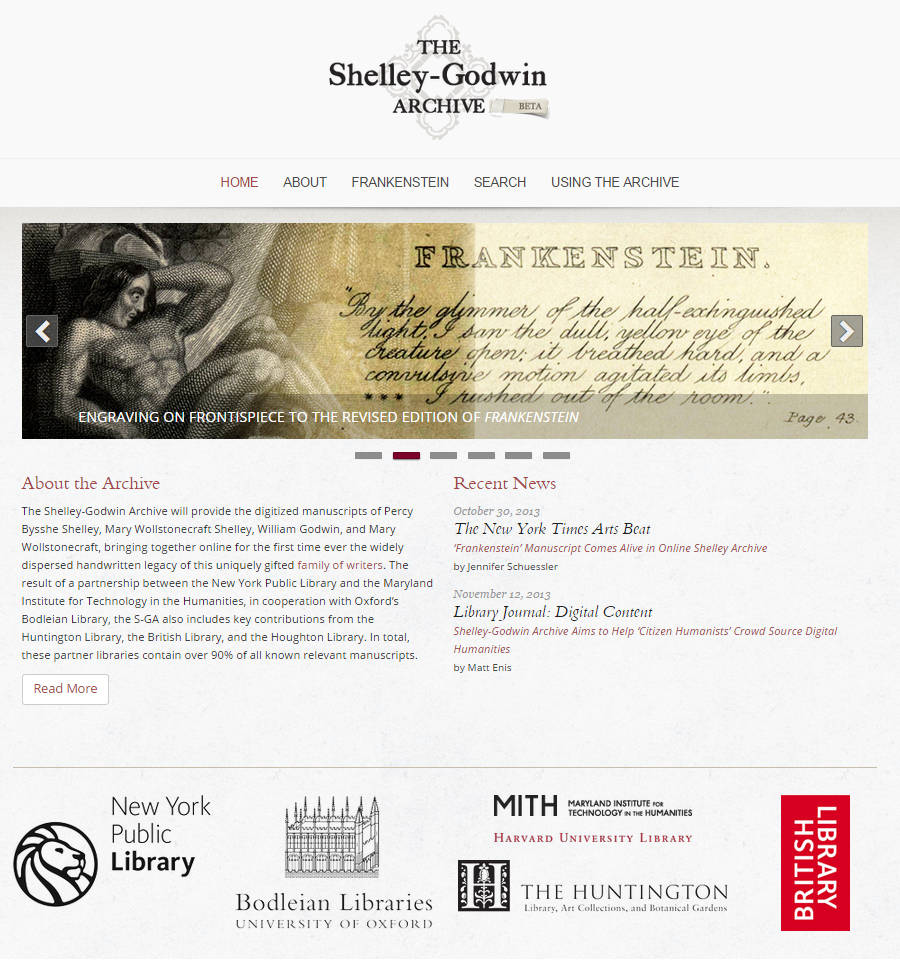
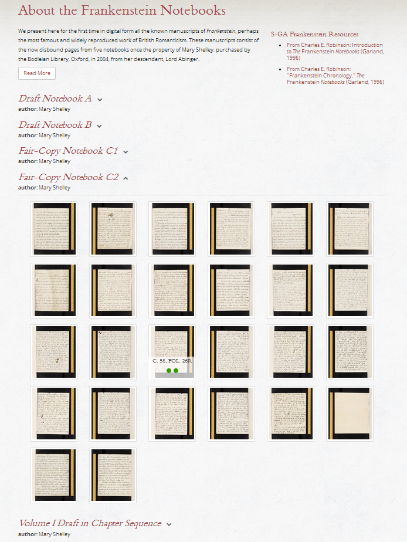
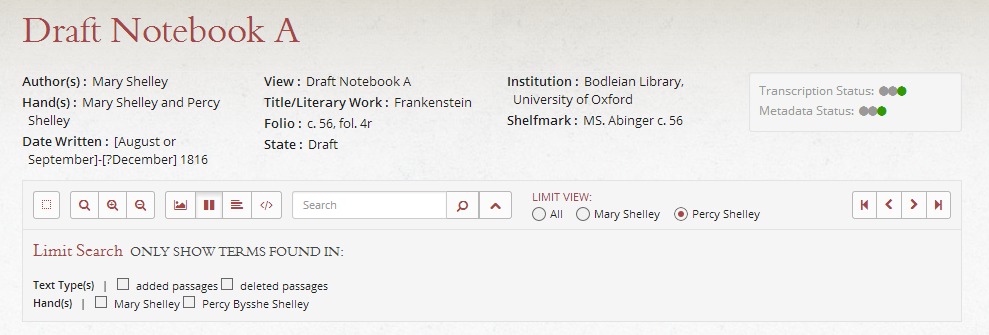
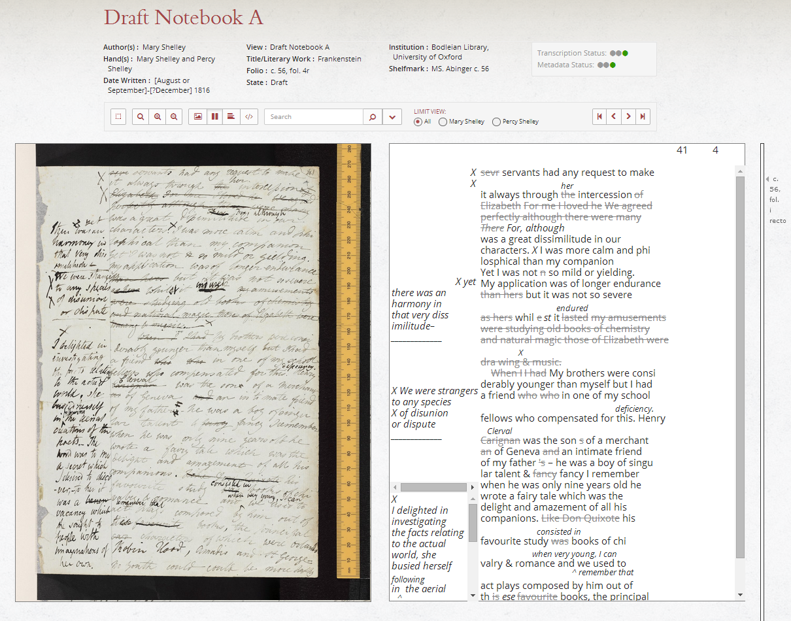
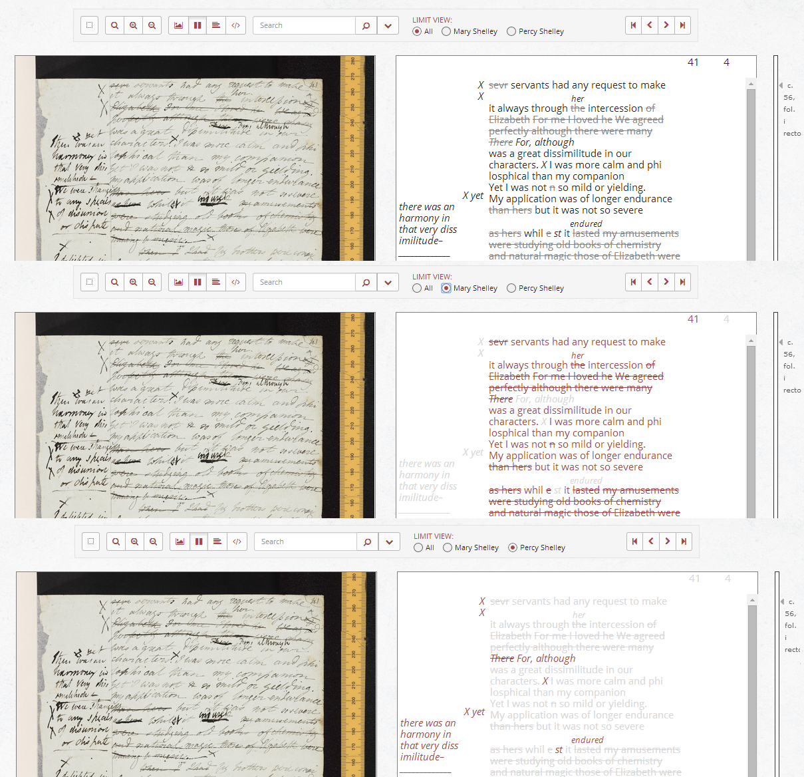
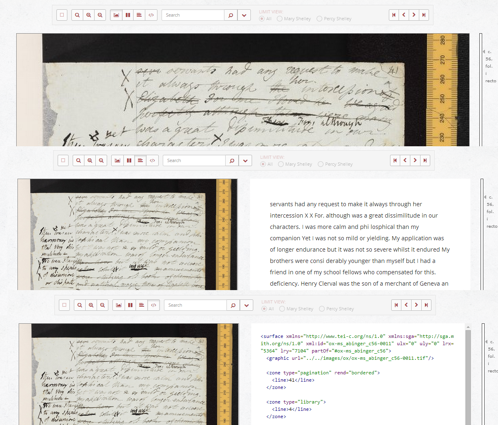
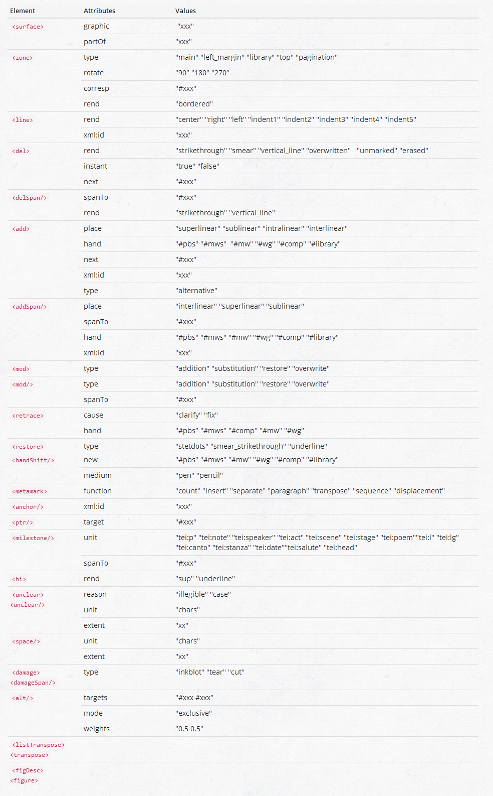

The Shelley-Godwin Archive: The edition of Mary Shelley’s Frankenstein Notebooks
Table of Contents
Abstract
The Shelley-Godwin Archive aims to bring the widely scattered handwritten legacy of the Shelley-Godwin family together on one platform. To date, in October 2014, it is still in the beta phase. The first release in 2013 presented the edition of the Frankenstein Notebooks by Mary Shelley, the drafts of one of the most popular and reprinted works of British Romanticism. This initial publication is based on a previous print edition from 1996 by Charles E. Robinson, which has been adapted and incorporated into the Shelley-Godwin Archive's structure. In the future, this first release will be followed by an edition of the fair-copy manuscripts of Prometheus Unbound by Mary Shelley's husband Percy Shelley and in further project stages by digitized manuscripts of her parents Mary Wollstonecraft and William Godwin. Aside from the digital provision of the complete literary legacy of the Shelley-Godwin family, a long-term goal of the Shelley-Godwin Archive is to create a collaborative research environment for scholars, students and the public.
Review
The Shelley-Godwin Archive will provide all known and relevant manuscripts of Percy Bysshe Shelley, Mary Wollstonecraft Shelley, William Godwin, and Mary Wollstonecraft in order to bring the dispersed handwritten legacy of this family of writers together on a common platform. It was launched in October 2013 with an edition of the Frankenstein Notebooks by Mary Shelley. At present (in October 2014) the Shelley-Godwin Archive is still in the beta phase, indicated by a marker in the header. Further information about the project's time frame is not provided on the website, with the last entry of the 'Recent News' dating back to October 2013. Despite the beta state, the Shelley-Godwin Archive at this point can still be considered relatively advanced in its presentation and technical features. Moreover, it is a good example of an edition-in-progress, publishing its content step by step.
This review consists of two parts: (1) An evaluation of the conceptual and technical framework of the Shelley-Godwin Archive as of October 2014, and (2) a review of the first release of the platform, the edition of the Frankenstein Notebooks. Finally, the review will close with an overall summary.
The Shelley-Godwin Archive
The Shelley-Godwin Archive is a collaborative project between various institutions, in particular the Maryland Institute for Technology in the Humanities (MITH), the New York Public Library, and the University of Oxford's Bodleian Library. With major contributions from the Huntington Library, the British Library, and the Houghton Library, the Shelley-Godwin Archive aims to cover 90% of all known and relevant handwritten documents of the Shelley-Godwin family. The project started its work in January 2013 and was initially funded by a three-year Humanities Collections and Reference Resources grant from the Preservation and Access division of the American National Endowment for the Humanities and a grant from the Gladys Krieble Delmas Foundation. Although the funding will end in June 2015, the Shelley-Godwin Archive is designed to be open-ended. MITH intends to continue its work with Liz Denlinger, David Brookshire, and Neil Fraistat as editors and a larger team of volunteer contributors.1 The list of contributors is exceptionally long (about 60 names) and reveals the edition as a collaborative product in which different tasks are shared between experts in the respective fields (philologists, librarians, software developers, consultants etc.). Despite the size of this group, the technical staff clearly make up the majority.2 In the first phase of the project, two graduate seminars at the University of Maryland and the University of Virginia also worked on transcriptions and encoding, and future collaborations with classrooms are planned.
The archive's content
From the late 18th century on, the Shelley-Godwin family produced a range of literary works, of which the most prominent are: An Enquiry Concerning Political Justice (1793) by William Godwin; A Vindication of the Rights of Woman (1792) by Mary Wollstonecraft; political writings and poetry by Percy Shelley; and Frankenstein (1818) by Mary Shelley. The launch of the digital edition of the Frankenstein Notebooks in October 2013 marks the start of a series of publications, which will unify the widely scattered literary work of the family members. The Shelley-Godwin Archive will provide digitized manuscripts in three different forms: (1) facsimiles with fully corrected transcriptions (TEI-encoded), (2) facsimiles with uncorrected transcriptions, and (3) facsimiles only. A color-coding system will denote the current status of each transcription and thus reveal their trustworthiness. No mention is made on the website of a future supply of critically edited or collated texts. Instead, the Shelley-Godwin Archive plans to establish a crowd-sourcing environment to engage users in collaboration and contribution to the Shelley-Godwin Archive's content.
Presentation and technical infrastructure

The technical infrastructure of the Shelley-Godwin Archive is built on the Shared Canvas data model. In line with linked open data principles, Shared Canvas is designed to support the description and presentation of digital facsimiles of physical objects in a collaborative environment. The data model is an abstract canvas, which allows for multiple annotations (e.g. transcriptions). Theoretically this entails that every user would be able to describe, rearrange and even reuse the facsimiles as well as associate additional annotations with the canvas. Thus, any single resource is no longer limited to one single purpose but can be edited by several persons both in the same project and in other contexts; and the interoperability between repositories that may hold related content is facilitated, too (Sanderson–Albritton).
At present, the Shelley-Godwin Archive has implemented the Shared Canvas model such that each manuscript page is associated with an URI. Thus, the facsimiles and aligned transcriptions can be placed in different contexts, as for instance in the 'Volume I-III Drafts in Chapter Sequence', which combines manuscript pages from witness A/B and C1/C2. As far as it concerns the possibility of adding multiple annotations to one canvas, the technical foundation is already built on RDF/JSON manifests. Before users will be able to target the canvases with annotations, the Shelley-Godwin Archive needs to realize its extension to a participatory platform. While the website does not reveal much about how or when this extension will support the open and interactive character of the platform, an article in the Chronicle of Higher Education suggests that the Shelley-Godwin Archive aims to be open to public participation at a large scale by 2016 and that the collaborative environment will be realized by implementing a framework called 'Skylark' (Howard).
The idea of 'sharing' content extends to the technical infrastructure of the Shelley-Godwin Archive: all software applications, libraries and encoded transcriptions are available under open licenses (the Apache License, Version 2.0 and the Creative Commons Attribution license) on GitHub3 and can be reused by third parties. GitHub also contains the detailed technical documentation of the Shared Canvas model and of the whole edition. The only thing missing from the documentation – and which due to the open-ended character of the Shelley-Godwin Archive would have been particularly interesting – is a statement about the long-term preservation of the content and the role of the participating institutions in this issue.
Benefits of the Archive
The literary work of the Shelley-Godwin family in multiple genres – treatise, novel, drama, and poetry – shows influences of historical events and movements such as the French Revolution, early feminism, and the Napoleonic wars. Bringing the (nearly) complete handwritten legacy of the family together in a digital form contributes not only to the research of the historical events they touched but also and primarily to the studies of English Literature in general and British Romanticism in particular. Furthermore, a common platform for all documents allows revealing possible connections to develop between the literary work of different family members. From a digital humanities perspective using established standards like the TEI as well as working with emergent standards of linked data makes the technical infrastructure of the Shelley-Godwin Archive exemplary for a new generation of open and interactive editions.
The Frankenstein Notebooks
This central section of the review concerns the Shelley-Godwin Archive's first editorial release: a digital edition of the Frankenstein Notebooks by Mary Shelley. More precisely, this release is the digital adaptation and incorporation (supplemented with a few corrections by the editor himself) of Charles E. Robinson's edition The Frankenstein Notebooks: A Facsimile Edition of Mary Shelley's Manuscript Novel, published in 1996.
Mary Shelley's epistolary novel Frankenstein (or The Modern Prometheus) was first published anonymously in London in 1818 when the author was only twenty. Mary Shelley had written the ur-story two years before while travelling in Europe with her future husband, Percy Shelley, and Claire Clairmont, during a stay in nearby Geneva in Switzerland where they joined Lord Byron and his physician John Polidori. In the rainy summer, the group entertained themselves by reading ghost stories, which lead Lord Byron to suggest that they each should try to write their own story. Mary Shelley's novel is about the scientist Victor Frankenstein who, experimenting with the reanimation of dead bodies, creates a monster. Frankenstein became one of the most popular and most reprinted works of British Romanticism.
The edition's content

Comparing the content of the digital edition with the previous printed version by Robinson, it should be mentioned that the content has not been transferred in its entirety. The 1996 edition provides, alongside the transcription, a transcript of the 1818 first print edition to offer insight into the transformation process between manuscript and print. This synopsis is lost in the digital version as the Shelley-Godwin Archive wants to represent only manuscripts and no printed volumes. Instead, the editors have chosen to provide a representation of the manuscripts according to the chapter sequence in the later published print. This method of constructing a non-existing text is debatable from a philological point of view. Moreover, without a clear explanation, the constructed volumes may come across as a third witness. Finally, it must be said that the introduction to the edited notebooks is relatively short and does not reveal much about the broader topical context of the edition. Although the Shelley-Godwin Archive suggests consulting the incorporated parts of Robinson's edition – on which the whole edition is built in the end – due to their arrangement in the right column they seem to hold just a secondary role.
The digital remake
The digital edition of the Frankenstein Notebooks has a modern, well-designed user interface that allows the user to navigate the content intuitively and to use offered features easily. The presentation of the edited notebooks can be divided in three parts: the metadata section, the toolbar, and the view of the edited notebook as facsimiles and corresponding transcriptions.



Below the main view of the edited notebooks the Shelley-Godwin Archive suggests for each folio the appropriate citation. For instance the first folio of Notebook B is cited with 'Shelley, M. (1817) "Frankenstein – Draft Notebook B", in The Shelley-Godwin Archive, c. 57, fol. 19r. Retrieved from http://shelleygodwinarchive.org/sc/oxford/frankenstein/notebook/b#n=1'. Such a citation suggestion can be very useful as it prevents incorrect references to the source. Nevertheless it would be preferable if 'speaking’ URLs were used. The connection between 'b#n=1' and 'c. 57, fol. 19r.' is not evident, neither to a human being nor to a machine. To make the connection comprehensible, the citation should follow a canonical reference system.


Achievements of the digital edition
First, it should be stated that no further scholarly value has been added to the Frankenstein Notebook's edition by the content of the edition. In fact, rather the opposite has happened: the transcription and the attribution of the hands are taken directly from Robinson's printed edition of 1996. Meanwhile, the genetic synopsis between the Frankenstein Notebooks and the first published volumes of 1818 has not been adopted. While it could be argued that the Shelley-Godwin Archive aims to include only manuscripts and no printed volumes, the editors excluded existing scholarly work from Robinson's edition, without any convincing explanation for the decision. The result is a digital edition that is, in this respect, poorer in scholarship than the source from which it borrows.
Even apart from the lost print-manuscript synopsis, there are questions regarding the data model the editors of the Frankenstein Notebooks opted for. Due to the fact that the notebooks display different redactions, genetic editing would suggest itself for the notebooks. And indeed the editors chose a TEI data model fit to capture genetic features and encoded the notebooks to such an extent that the topological structure of the text in the document and the changes of hands are documented. However, these two features – despite being crucial for a genetic edition in this case – cover only little of the potential which could have been exploited by using the genetic module: on the level of micro-genesis, in addition to the attribution of hands to the passages written by Mary or Percy Shelley, further layers reconstructing the chronology of the writing process would be necessary in order to reveal the genesis of the final text. Such layers are of particular interest and importance in those cases in which Mary modified the text again after Percy's intervention.6 A second missing feature is the text-image linking, which would help the user to find the corresponding parts to the image-zones in the transcription.7 On the level of macro-genetic analysis, a synoptic presentation of the composition history through all witnesses (there are only two) to reveal the variations of the text in its different stages would be extremely useful; otherwise, the user has to go back-and-forth to connect the corresponding parts in the different witnesses.8 It could be argued that the editors renounced a deeper genetic investigation of the manuscripts, because the Frankenstein Notebooks do not even aim to be a genetic edition, but this would raise the question why the editors chose the genetic module at all and not a more compact and simple data model.
Both criticisms – the loss of the manuscript-print synopsis and the ambivalent genetic character – lead to a bigger question: what is the focus of the digital edition of the Frankenstein Notebooks? The edition's introduction claims to present 'for the first time in digital form all the known manuscripts of Frankenstein',9 but this is not an editorial statement. To understand the edition's 'identity', a more extensive introduction containing information on the editorial methodology and its scope, including insight about the motivation to choose the genetic encoding scheme would be necessary.
In summary, the positive aspects of the digital edition should be underlined: the digitization of the Frankenstein Notebooks will allow scholars to gain deeper insights into the history of the origins of the Frankenstein story. This is of particular interest because of the long lasting debate about Mary Shelley's authorship and the contribution of her later husband Percy Shelley to the novel. The digitized manuscripts reveal that very significant changes were made by Percy Shelley in words, themes and style, but they show at the same time that Mary Shelley should be credited with the whole narrative framework of the novel, which was written by her hand. The high-resolution facsimiles and the attribution of the hands in the transcription will greatly contribute to this important debate and will allow scholars to refute, confirm or modify the theses and theories regarding the origin of Frankenstein.
Last but not least, and this is a crucial outcome of the transformation from Robinson's edition into the digital form, the Frankenstein Notebooks goes much further than a simple digitization of a print. The edition has completely shed its book-character, being entirely adapted and transformed into the digital medium. Following the digital paradigm, the Frankenstein Notebooks has obtained even the advantages that go along with it: the storage format is flexible, and as data and presentation of the notebooks are separated, the data can be transformed in multiple ways to create different outcomes of the edition (e.g. a reading or a diplomatic view of the transcription). Further, the content is also searchable, and the machine-readable format even allows for refining both search and search results.
Conclusion
The first release of the Shelley-Godwin Archive, the edition of the Frankenstein Notebooks, has a few minor weaknesses, including the loss of the missing manuscript-print synopsis from the print edition. Furthermore, the complex genetic encoding scheme coupled with the lack of genetic analysis represents a paradox. A more extensive overview of the principles and goals of the Frankenstein Notebooks will be a necessary addition to resolve these inconsistencies. Nevertheless, a rare and very expensive facsimile print edition has been made available for everyone in a way that goes much further than a simple digitization project. The digital edition of the Frankenstein Notebooks completely follows the digital paradigm and, as a result, obtains the advantages that go along with it. In the future it will be interesting to see how further material will be integrated and if the contents will be somehow interlinked.
The Shelley-Godwin Archive is certainly a great resource for students and scholars. Even in beta-state, the project's web presentation, its technical framework and its documentation represent a highly elaborate and accomplished project. By collecting the dispersed literary legacy of the Shelley-Godwin family and re-unifying it on a common platform, the Shelley-Godwin Archive is a great win for the international research landscape of the family of writers as well as of English literature and British Romanticism. Finally, I expect that the Shelley-Godwin Archive will be – with its linked data principles, its philosophy of 'sharing technical achievements', and its envisioned collaborative environment to empower 'citizen scholars' – a future contender for the state-of-the-art in a new generation of open and interactive digital editions.10
Bibliography
- Howard, Jennifer. “Frankenstein's Manuscript Draws Its First Breath Online.” The Chronicle of Higher Education (2013). http://web.archive.org/save/http://chronicle.com/article/Frankensteins-Manuscript/142701/.
- Laplace-Sinatra, Michael. “The Creation of Frankenstein.” Romanticism on the Net 6 (1997). http://web.archive.org/save/http://www.erudit.org/revue/ron/1997/v/n6/005748ar.html.
- Robinson, Charles E. The Frankenstein Notebooks: A Facsimile Edition of Mary Shelley’s Manuscript Novel. Manuscripts of the Younger Romantics, Volume IX. Parts A and B. New York: Garland Publishing, 1996.
- Sanderson, Robert, and Benjamin Albritton, eds. Shared Canvas Data Model 1.0, 14 February 2013 http://web.archive.org/web/20141006102243/http://iiif.io/model/shared-canvas/1.0/index.html.
- The TEI Workgroup on Genetic Editions. An encoding model for genetic editions. http://web.archive.org/save/http://www.tei-c.org/Activities/Council/Working/tcw19.html.
Notes
- At this point, I would like to thank Neil Fraistat, Principal Investigator and Project Director, who kindly provided further information for this review when necessary. ↑
- http://web.archive.org/web/20140909143030/http://shelleygodwinarchive.org/about, see 'Contributors'. ↑
- https://github.com/umd-mith/sga. ↑
- Shelley, M. (1817). "Frankenstein - Draft Notebook B", in The Shelley-Godwin Archive, c. 57, fol. 78v. Retrieved from http://shelleygodwinarchive.org/sc/oxford/frankenstein/notebook/b#n=120. ↑
- http://web.archive.org/save/http://shelleygodwinarchive.org/about#encodingthesga. ↑
- An example for layering at least eight hands (from 1414 up to the 16th century) is the Styrian Marchfutterurbar (rental roll) by Matthias Perstling from the University of Graz: http://hfi.uni-graz.at/mfu/#trans-gt-pag001. Accessed: 10.09.2014. ↑
- An exemplary text-image linkage (even of polygons) offers e.g. the Online-Edition of Immanuel Kant's Opus Postumum hosted by the Berlin-Brandenburg Academy of Sciences and Humanities: http://telota.bbaw.de/kant_op/edition.html#C02/017. Accessed: 10.09.2014. ↑
- An exemplary edition which offers both micro- and macro-genetic analysis and presentation is the Samuel Beckett Digital Manuscript Project which works with layers and which has marked sentences, paragraphs and sections with IDs to connect them through all witnesses and thus allows for their comparison. http://web.archive.org/web/20141207124037/http://www.beckettarchive.org/demo/MS-UoR-2934.htm?text=documentsentence&page=06&type=linear&trans=basic¬es=on&metamarks=&id=. The project is hosted by the Centre for Manuscript Genetics of the University of Antwerp. ↑
- http://web.archive.org/web/20141007133859/http://shelleygodwinarchive.org/contents/frankenstein. ↑
- The research leading to these results has received funding from the People Programme (Marie Skłodowska-Curie Actions) of the European Union’s Seventh Framework Programme FP7/2007-2013/ under REA grant agreement n° 317436 (DiXiT). ↑
@article{sga,
author = {Neuber, Frederike},
title = {The Shelley-Godwin Archive: The edition of Mary Shelley’s Frankenstein
Notebooks},
journal = {RIDE – A review journal for digital editions and resources},
number = {2},
year = {2014},
doi = {10.18716/ride.a.2.5},
url = {https://doi.org/10.18716/ride.a.2.5},
}TY - JOUR
AU - Neuber, Frederike
TI - The Shelley-Godwin Archive: The edition of Mary Shelley’s Frankenstein
Notebooks
T2 - RIDE – A review journal for digital editions and resources
IS - 2
PY - 2014
DA - 2014/12
DO - 10.18716/ride.a.2.5
UR - https://doi.org/10.18716/ride.a.2.5
PB - Institut für Dokumentologie und Editorik e.V.
LA - en
ER - Neuber, F. (2014). The Shelley-Godwin Archive: The edition of Mary Shelley’s Frankenstein
Notebooks. RIDE – A review journal for digital editions and resources, (2). https://doi.org/10.18716/ride.a.2.5Neuber, Frederike. "The Shelley-Godwin Archive: The edition of Mary Shelley’s Frankenstein
Notebooks." RIDE – A review journal for digital editions and resources, no. 2, 2014. https://doi.org/10.18716/ride.a.2.5.Neuber, Frederike. "The Shelley-Godwin Archive: The edition of Mary Shelley’s Frankenstein
Notebooks." RIDE – A review journal for digital editions and resources, no. 2 (2014). https://doi.org/10.18716/ride.a.2.5.